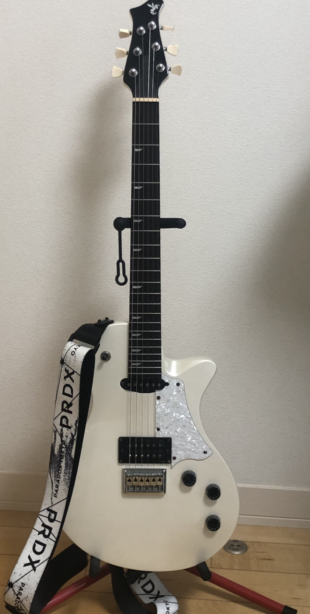

自己紹介
1. 概要
荒木孝太郎は兵庫県神戸市出身の関西学院大学2回生。
2. 略歴
2004年 8月11日 愛知県知多市に生まれる
2014年 アコースティックギターを始める
2017年 広陵中学校に入学し、ソフトテニス部に入部する
2018年 北区ジュニア選手権大会(男子2年生個人の部)9位
2020年 兵庫高校に入学し、ギターアンサンブル部に入部する
麻雀にハマる
第10.1回鉄人化まつり参加
2021年 チェスにハマる
第11回鉄人化まつり参加
ソニックライブ参加
2023年 関西学院大学経済学部に入学
3. 趣味
ギター
小学校3年生の時にアコースティックギターを始めた
高校から部活でエレキギターを始めた
愛刀はRyogaのHORNET
ネックが厚めで弾きやすく、ヘッドのデザインがイケてる
音楽鑑賞
高校で軽音部に入ったため、色々なバンドの曲を聴くようになった
好きなジャンルは邦ロック、ジャズ
好きなバンドについては後述
マンガ・アニメ
中学生のころからよく見るようになった
きっかけは「ノーゲーム・ノーライフ」
後述のもの以外で面白かったものは「亜人」「ダンガンロンパ」「めだかボックス」
ボードゲーム
高校2年生の時に友人に連れられて行ったボードゲームカフェが楽しかった
好きなボードゲームは配られたカードで告白の言葉を考える大喜利系ゲーム「たった今考えたプロポーズを君に捧げるよ」
偉人を合体させてバトルする「ソクラテスラ」
いくつかの質問から相手の数字を推測する「タギロン」など
4. 好きなもの
バンド
NEE
NEEは東京で結成されたエキゾチックロックバンド
最も有名な「不革命前夜」はYouTubeで1478万回再生
ライブで盛り上がる曲が多く、野外ライブは特に楽しいのでぜひ
お勧めは 「ボキは最強」「夜中の風船MarkⅡ」
シンガーズハイ
日本の4ピースロックバンド
最も有名な「ノールス」はYouTubeで951万回再生されている
曲はめちゃくちゃ良いけどライブはダイバーがいて怖い
お勧めは「Kid」ライブでは照明の演出も相まって特にかっこいい
猫背のネイビーセゾン
ー 神戸、夜を彩るネオンロックバンド ー
あまり有名ではないため、今から聞いてれば古参
お勧めは「偽り切ないな」
マンガ・アニメ
ジョジョの奇妙な冒険
「人間賛歌」をテーマとした能力バトルマンガ
現在10部が連載中で、6部まではアニメ化されている
お勧めは7、5、3部
好きなキャラクターはジャイロ・ツェッペリ
ぐらんぶる
ダイビングを題材としたアニメ
この世で最も面白いギャグアニメ
現在、二期の制作が決定しており一期がYouTubeで公開されている
実写映画化もされている
今際の国のアリス
主人公たちは次々と理不尽なゲームを突きつけられ、生きるか死ぬかの戦いを強いられる
登場人物全員に活躍シーンがあり、どのキャラも好きになれる
好きなキャラクターはキューマ
ドラマとマンガが公開されている
ボードゲーム
OVERROID
A.D.2045。シンギュラリティの到来。それは、アンドロイドと人類の長き戦争の始まりだった――
アンドロイド側と人類側に分かれて戦うカードゲーム
ココフォリアで無料で遊べる
心理戦の要素を多く含んでおり、人読みも織り交ぜて友人と戦うと白熱するためぜひやってみてほしい
私の好きなカードは獣
チェス
チェスは世界的にプレイされているゲーム。
私の好きなオープニングは白ならキングス・ギャンビット
黒ならルソー・ギャンビット
麻雀
麻雀は14枚の手牌で役を作るゲーム。
私が好きな役はタンヤオ・平和
四麻放銃率12%が私の自慢